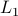

Asymptotic normality of robust risk minimizers. Preprint (2020).
PDF.
Robust modifications of U-statistics and applications to covariance estimation problems (with X. Wei). Bernoulli 26, No. 1, 694-727 (2020).
arXiv:1801.05565
Excess risk bounds in robust empirical risk minimization (joint with T. Matthieu). Submitted (2019).
arXiv:1910.07485
Uniform bounds for robust mean estimators. Submitted (2019).
arXiv:1812.03523
User-Friendly Covariance Estimation for Heavy-Tailed Distributions: A Survey and Recent Results (with Yuan Ke, Zhao Ren, Qiang Sun and Wen-Xin Zhou). Statistical Science,
Vol. 34, No. 3, 454-471 (2019).
arXiv:1811.01520
Moment inequalities for matrix-valued U-statistics of order 2 (with X. Wei).
Electronic Journal of Probability 24, No. 133, 1–32. (2019).
arXiv:1801.05921
Distributed statistical estimation and rates of convergence in normal approximation. Electronic Journal of Statistics, Vol. 13(2), 5213-5252. (2019).
PDF of the most recent version.
Structured signal recovery from non-linear and heavy-tailed measurements (with L. Goldstein and X. Wei). IEEE Transactions on Information Theory,Vol. 64, Iss. 8, pages 5513 - 5530 (2018).
arXiv:1609.01025.
Sub-Gaussian estimators of the mean of a random matrix with heavy-tailed entries. Annals of Statistics, Vol. 46, pages 2871-2903 (2018).
arXiv:1605.07129.
Estimation of the covariance structure of heavy-tailed distributions (with X. Wei). Neural Information Processing Systems (NeurIPS) 2017.
arXiv:1708.00502.
Multiscale Dictionary Learning: Non-Asymptotic Bounds and Robustness (with M. Maggioni and N. Strawn). Journal of Machine Learning Research, 17(2):1−51 (2016).
Abstract and PDF.
Code on M. Maggioni’s webpage.
Geometric Median and Robust Estimation in Banach Spaces. Bernoulli 21, no. 4, 2308–2335 (2015).
arXiv:1308.1334
On some extensions of Bernstein's inequality for self-adjoint operators. Statistics and Probability Letters, 127, p. 111-119 (2017).
arXiv:1112.5448
Functional linear model with subgaussian design:  - penalization approach (with V. Koltchinskii). Journal de l’Ecole Polytechnique – Mathematiques, 1, p. 269-330 (2014).
PDF.
Robust and scalable Bayes via a median of subset posterior measures (with S. Srivastava, L. Lin and D. Dunson). Journal of Machine Learning Research, 18(124):1−40 (2017).
arXiv:1403.2660
M-posterior code is available here; R package can be downloaded here.
Active Learning for Personalized Medicine (with G. Cheng and Y. Zhao). Journal of the American Statistical Association, vol. 111, number 514, p. 875-887 (2015).
arXiv:1404.2971
Scalable and Robust Bayesian Inference via the Median Posterior (with S. Srivastava, L. Lin and D. Dunson). In ICML 2014, 31st International Conference on Machine Learning.
PDF.
Multiscale Dictionary and Manifold Learning: Non-Asymptotic Bounds for the Geometric Multi-Resolution Analysis (with M. Maggioni and N. Strawn). In iTWIST 2014, International Traveling Workshop on Interactions between Space Models and Technology.
Conference Proceedings.
Learning Extreme Values and Associated Level Sets of a Regression Function via Selective Sampling. In COLT 2013, 26th Conference on Learning Theory.
Abstract and PDF.
Plug-in approach to Active Learning. Journal of Machine Learning Research 13, p. 67-90 (2012).
Abstract and PDF.
Improved version of some bounds can be found in Chapter 2 of my
Ph.D. thesis.
Sparse recovery in convex hulls of infinite dictionaries (with V. Koltchinskii). In COLT 2010, 23rd Conference on Learning Theory.
PDF.
Extended version is included in Chapter 3 of my Ph.D. thesis.
Non-Asymptotic Bounds for Prediction Problems and Density Estimation. Georgia Institute of Technology, 2012. PDF.